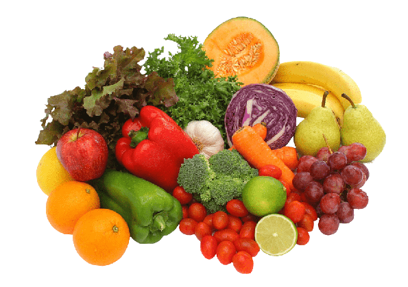

Quem somos?
Somos a food and physical health, um site feito para ajudar as pessoas a terem uma vida saudável através de sugestões para uma boa alimentação, receitas mais saudáveis e prática de exercícios físicos.
Estamos no mercado desde 2021, por isso estamos sempre antenados aos novos costumes alimentares. O nosso objetivo é proporcionar uma maneira de obter uma vida saudável de maneira gratuita.